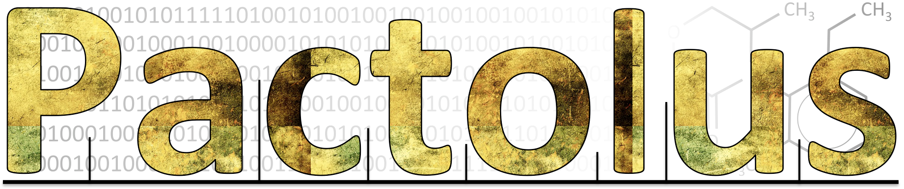

Pactolus
Overview
Generating fragmentation trees
Scoring spectra against trees
Scoring spectra against spectra
Data Formats:
score_frag_dag: Scan/Spectrum data format:
score_frag_dag: Temporary output data format:
score_frag_dag: Main output data format:
score_frag_dag: File Lookup table data format:
pactolus
Package
generate_frag_dag module
score_frag_dag module
spectra_distance module
Pactolus
Docs
»
Welcome to Pactolus’s documentation!
View page source
Welcome to Pactolus’s documentation!
¶

Overview
Generating fragmentation trees
Scoring spectra against trees
Scoring many spectra against many trees
Scoring a single spectrum against a single tree
Computing the matched atoms
Scoring spectra against spectra
Data Formats:
score_frag_dag: Scan/Spectrum data format:
score_frag_dag: Temporary output data format:
score_frag_dag: Main output data format:
score_frag_dag: File Lookup table data format:
pactolus
Package
generate_frag_dag module
score_frag_dag module
spectra_distance module
Indices and tables
¶
Index
Module Index
Search Page
{kind=link}